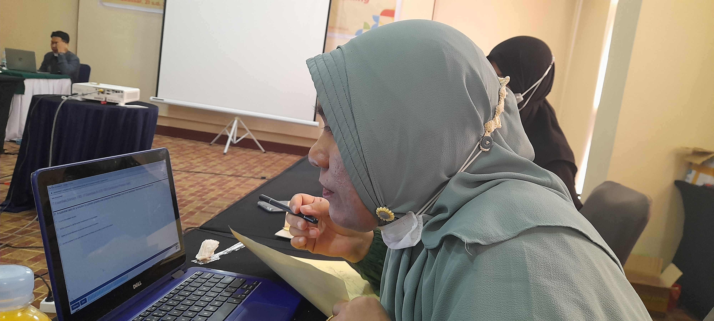
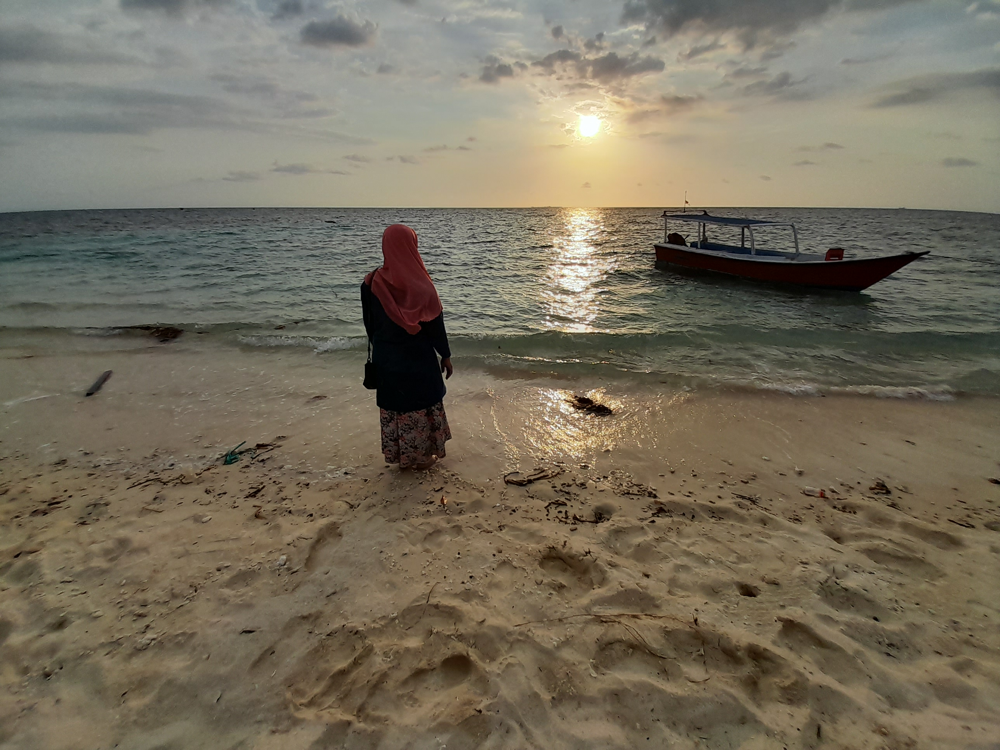
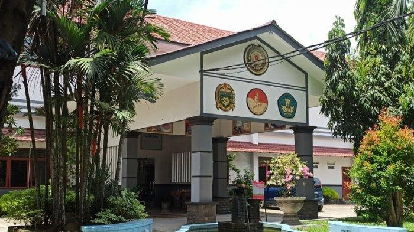
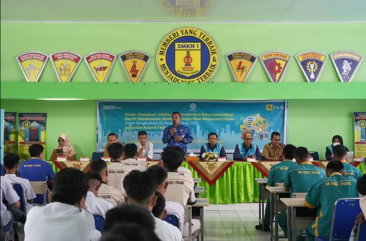
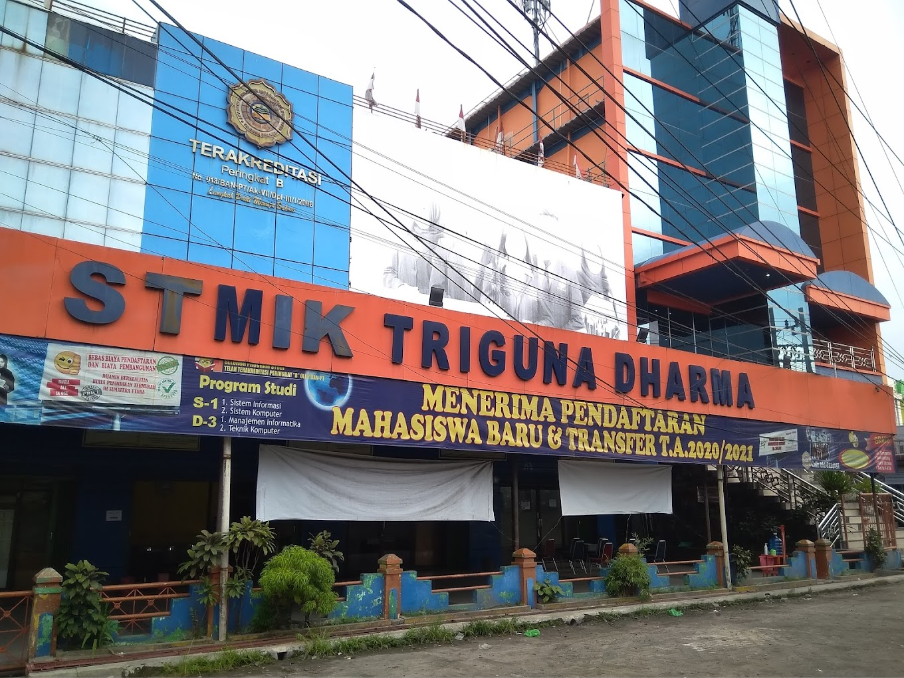
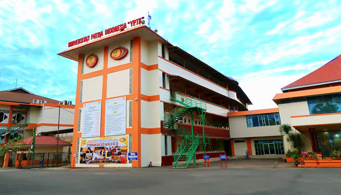
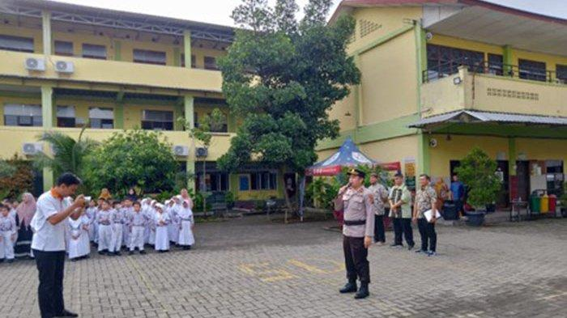

Personal

Annisah Husni Daulay adalah seorang individu yang lahir dan besar di kota yang berwarna dan bersejarah, Kota Medan. Sebagai anak kedua dari tiga bersaudara, Annisah tumbuh dalam lingkungan keluarga yang penuh kasih dan memberikan dukungan tak tergantung bagi ambisi dan minatnya. Sejak dini, Annisah telah menunjukkan ketertarikan yang mendalam pada dunia pendidikan dan pengembangan diri. Dari kecil, dia selalu merasa tertarik untuk mengetahui lebih banyak tentang berbagai hal, mulai dari buku cerita hingga sains dan teknologi. Ketertarikannya terhadap pembelajaran memuncak ketika dia memasuki dunia pendidikan formal.
Sebagai seorang guru Rekayasa Perangkat Lunak (RPL), Annisah menjadikan pendidikan sebagai panggilan hidupnya. Dia menganggap setiap hari sebagai kesempatan untuk memberikan pengaruh positif pada kehidupan siswanya. Pendekatan pengajaran Annisah tidak hanya terbatas pada transfer pengetahuan, tetapi juga berfokus pada pengembangan keterampilan dan karakter yang diperlukan untuk sukses di dunia nyata. Keinginannya untuk terus belajar dan berkembang menginspirasi siswanya untuk melakukan hal yang sama. Di luar jam kerja, Annisah menemukan kedamaian dan kegembiraan dalam membaca buku dan mengeksplorasi pengetahuan baru. Hobi ini bukan hanya hiburan baginya, tetapi juga merupakan sarana untuk memperluas wawasannya dan terus mengasah keterampilannya.
Dengan kepribadian yang ceria dan semangat yang tak tergoyahkan, Annisah tidak hanya menjadi seorang pendidik yang luar biasa, tetapi juga seorang panutan bagi para siswanya. Dia percaya bahwa pendidikan adalah kunci untuk membuka pintu menuju masa depan yang lebih cerah dan memberdayakan siswa untuk mewujudkan potensi terbaik mereka. Melalui dedikasi, kerja keras, dan cinta pada pembelajaran, Annisah Husni Daulay terus menjadi sosok yang menginspirasi dan memberikan dampak positif bagi masyarakat pendidikan di sekitarnya.
Pendidikan

Pendidikan Formal
- S2 Magister T.Informatika
- S1 Teknik Informatika
- SMK Telkom
- SMPN 1 Medan
- SD Swasta Tebing
Pendidikan Non - formal
- Dicoding
- Sololearn
- W3Schools
- Oracle
- Cisco
Pengalaman
Bagi saya pentingnya pengalaman kerja terletak pada kemampuan untuk mencerminkan keterampilan, pengetahuan, dan pencapaian individu dalam konteks profesional. Pada saat mencari pekerjaan baru, pengalaman kerja biasanya dicantumkan dalam resume atau CV untuk memberikan gambaran kepada calon employer tentang latar belakang dan kompetensi kandidat. Pengalaman kerja dapat bervariasi dari pekerjaan paruh waktu hingga pengalaman kerja penuh waktu, serta mencakup pengalaman di berbagai industri dan sektor. Diantara pengalaman kerja yang sudah dilakukan yaitu berikut ini :
SMKN 9 Medan, 2018 - Sekarang

Mengajar di bidang Rekayasa Perangkat Lunak dengan mata ajar Produktif
SMKN 9 Medan adalah sekolah menengah kejuruan yang menawarkan program kejuruan praktis, mencakup berbagai bidang seperti teknologi, bisnis, dan pertanian. Dengan menekankan praktik kerja industri dan kerjasama dengan perusahaan lokal, sekolah ini bertujuan mempersiapkan siswa dengan keterampilan yang relevan untuk memasuki dunia kerja. Kurikulum berbasis keterampilan dan pendidikan karakter menjadi fokus, membentuk siswa untuk menjadi individu yang siap menghadapi tantangan di masa depan. Informasi lebih lanjut dapat ditemukan di situs web resmi atau melalui kontak langsung dengan SMKN 9 Medan.
SMKN 1 Padang, 2011- 2018

Mengajar di Teknologi Informatika Komputer dengan mata ajar Normatif
SMKN 1 Padang adalah sebuah sekolah menengah kejuruan di Kota Padang yang menonjolkan pendidikan kejuruan praktis. Dikenal dengan fokusnya pada pengembangan keterampilan siswa, sekolah ini menawarkan berbagai program kejuruan seperti teknologi, bisnis, dan pertanian. Dengan menekankan praktik kerja industri dan kerjasama aktif dengan perusahaan lokal, SMKN 1 Padang berusaha memberikan pengalaman nyata kepada siswa, mempersiapkan mereka dengan keterampilan yang relevan untuk langsung terjun ke dunia kerja setelah lulus.
STMIK Triguna Dharma, 2007 - 2010

Mengajar di Mata Kuliah Pemrograman dan Design
STMIK Triguna Dharma Medan adalah sebuah perguruan tinggi di Medan yang fokus pada bidang teknologi dan informatika. Perguruan tinggi ini dikenal menyediakan program pendidikan tinggi dalam berbagai disiplin ilmu seperti teknologi informasi, sistem informasi, dan manajemen informatika. STMIK Triguna Dharma Medan terus berupaya memberikan pendidikan berkualitas dengan mengintegrasikan teori dan praktik, mempersiapkan mahasiswa untuk menghadapi tuntutan dunia kerja di era teknologi informasi. Melalui kurikulum yang relevan, fasilitas modern, dan kerjasama dengan industri, STMIK Triguna Dharma Medan berkomitmen untuk menghasilkan lulusan yang kompeten dan siap bersaing di dunia industri teknologi.
UPI "YPTK" Padang, 2010 - 2011

Mengajar di Mata Kuliah Pemrograman dan E-commerce
UPI YPTK Padang adalah salah satu perguruan tinggi di Padang yang menonjolkan pendidikan dan pengembangan sumber daya manusia. Universitas ini dikenal dengan berbagai program studi di berbagai bidang, mencakup pendidikan, ekonomi, teknik, dan lainnya. Dengan pendekatan yang holistik, UPI YPTK Padang berkomitmen untuk memberikan pendidikan yang berkualitas, menggabungkan teori dan praktik agar mahasiswa siap menghadapi tantangan dunia kerja. Fasilitas modern, kurikulum yang berorientasi pada perkembangan industri, dan keterlibatan dalam penelitian serta pengabdian kepada masyarakat menjadi ciri khas dari UPI YPTK Padang.
SD Namira Islamic School, 2004 - 2010

Mengajar di Teknologi Informatika Komputer dengan mata pelajaran Komputer
SD Namira Islamic School Medan menawarkan kurikulum yang mencakup mata pelajaran akademis standar sekaligus pengajaran nilai-nilai Islam, Al-Qur'an, dan bahasa Arab. Sekolah ini dapat memiliki suasana pembelajaran yang mendukung pengembangan karakter dan moral siswa sesuai dengan prinsip-prinsip Islam. Fasilitas dan program ekstrakurikuler yang mendukung perkembangan holistik siswa juga dapat menjadi bagian integral dari pendekatan pendidikan di SD Namira Islamic School Medan
Contact
Untuk mengenal lanjut dengan saya dapat dihubungi pada akun media sosial berikut ini :
- Instagram
- Linkedlin
- Github
- Youtube